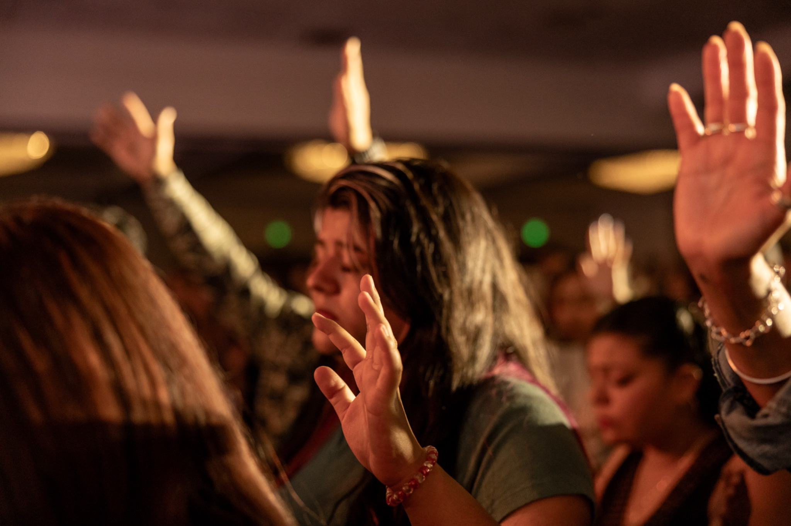

Service Times
Join us Sundays at 10:00 AM for worship, practical teaching, and prayer. Services last approximately 75 minutes.
Learn MoreA welcoming church community where people can worship, grow in their relationship with God, connect with others, and discover their purpose.
Plan Your VisitJoin us Sundays at 10:00 AM for worship, practical teaching, and prayer. Services last approximately 75 minutes.
Learn MoreWe meet at 136 S. Gaffey St. in San Pedro. Arrive about 15 minutes early to allow time for parking and getting settled.
Visit InformationWhether you are new to church or have been following Christ for years, there is a place for you here.
What to Expect
Learn about our purpose, vision, biblical foundation, and commitment to serving the San Pedro community.
About Us
Discover upcoming opportunities to worship, connect, serve, and grow together.
View EventsWatch and listen to messages designed to encourage spiritual growth and a deeper relationship with God.
Watch SermonsUse your gifts and abilities to serve others and help create a welcoming church community.
Serve With UsDiscover ministries and opportunities for children, youth, prayer, outreach, and spiritual growth.
Explore MinistriesShare a prayer request and connect with our church community in prayer.
ConnectSupport the ministry and mission of Reach San Pedro through giving.
Give